qui est par ce que la taille de l’image (dans le header) et la taille du fichier ne sont pas les mêmes , nous pouvons reparer le header et manuellement changer cette valeur de 99 a 9A le projet nous donne aussi un warning si cette meme erreur se produit
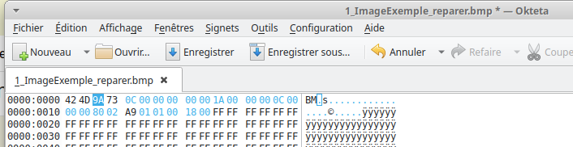image ./images/A0_erreur_signature_reparer.png
A1
faire l’image avec le projet il est simple de crée une image pixel par pixel
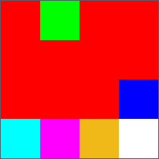 # A3 la class BMPFile a en information TOUT les format de header et fait facilement des changement a ces formats donc juste selectionner le format de header que vous voulez et sauvegarder car convert ne respecte pas le setting de DPI 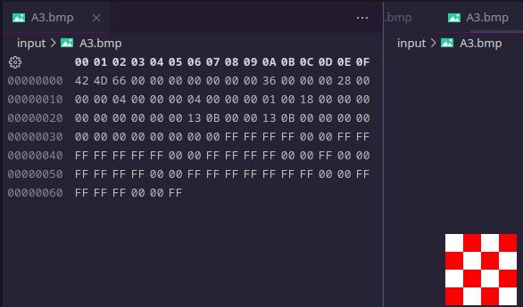
1.Combien y-a-t-il de bits par pixel ? et bien il y a plusieur facons de répondre a cette question , on peut voire dans l’en-tête de votre image (BITMAPINFOHEADER) que le décalage pixels est 36h (54) et on vois que le pixel est rouge ; et dans le fichier le code est 00 00 FF ce qui encode le pixel en GBR (RGB inverser) avec 24 bits (8bits par chanels) ou l’on peut regarder décalage 1Ch (offset pour le nombre de bits par pixel bits_per_pixel) ce qui nous donne 18 00 qui correspond a 24 bits
2.Quelle est la taille des données pixels ? L’en-tête indique 66 00 00 00 , ce qui nous donne une taille de fichier de 102 bytes. si on calcule toute les parties du fichier (file size=102, file header=14, infoheader=40, palette 0)=> 102 - 54 = pixels 48 ou l’on peut faire que il y a 24 bits 3 bytes * (4*4) = 48.
3.Y a-t-il une compression utilisée ? L’en-tête est capable de choisir une méthode de compression mais la valeur 00 00 00 00 est aucune compression. donc non le fichier n’est pas compresser.
4.Le codage des pixels a-t-il changé ? Les valeurs FF FF FF représentent des pixels blancs dans votre image, et 00 00 FF représentent les pixels rouge exactement comme avant.
A4
j’aurai bien voulue dire que mon outils fonctionne aussi bien avec des palettes de couleurs mais il est buggé.
Combien y-a-t-il de bits par pixel? Dans l’en-tête de l’image 01 00 donc 1 bit par pixel ; et si l’on regarde la palette 00 00 FF 00 ; FF FF FF FF 00 32 bits GBRA 8.8.8.8 par couleur.
Quelle est la taille des données pixels? L’en-tête indique 3E 00 00 00 en offset pour la table des pixels et une taille de fichier de 78 , 78 - 62 = 16; avec la palette , l’image ne prend plus que 16 bytes pour stocker 32 bits depth color 4*4 pixels.
Y a-t-il une compression utilisée? L’en-tête indique 00 00 00 00, donc aucune compression.
Comment sont codées les couleurs de la palette? La palette de couleurs est donnée par les valeurs hexadécimales 00 00 FF 00 ; FF FF FF 00. Chaque couleur est codée sur 4 octets, 32 bits GBRA 8.8.8.8 par couleur.
Quel est le nombre de couleurs dans la palette? La palette contient deux couleurs distinctes, car il y a deux valeurs distinctes (rouge et blanc).
Le codage des pixels a-t-il changé? Oui, les pixels sont maintenant codés sur 32 bits (au lieu de 24 bits précédemment). Cela est dû à l’utilisation d’une palette de couleurs, où chaque pixel est représenté par un index d’un seul bit faisant référence à une couleur dans la palette.
image ./images/A4_bleu.png
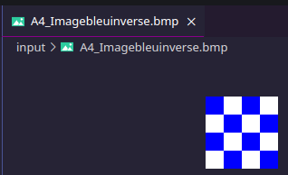image ./images/A4_bleu_inverse.png
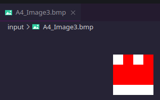image ./images/A4_Image3.png
image ./images/A4_big.png
A quelle adresse peut-on trouver le nombre de couleurs qu’il y a dans la palette? on retrouve le nombre de couleur a l’adresse (palette_colors) 0x000E (32d) ou il y a noté 10 00 00 00 = 16
12.A quelle adresse dans la palette peut-on trouver la couleur à dominante “Blanc” utilisée par cette image? [[116, 43, 6, 0], [92, 35, 10, 0], [112, 80, 56, 0], [12, 102, 250, 0], [32, 103, 232, 0], [81, 111, 171, 0], [134, 53, 12, 0], [161, 91, 21, 0], [205, 121, 15, 0], [156, 111, 82, 0], [205, 146, 61, 0], [244, 232, 216, 0], [254, 254, 253, 0], [229, 223, 220, 0], [221, 193, 162, 0], [92, 145, 221, 0]] la palette en RGBA l’index est 12 pour le plus proche du blanc
13.Où commence le tableau de pixel? la palette commence après le header de 36h a 54h vu que l’offset du début du tableau de pixel est dans le header alors il peut y avoir un trou entre la palette et le tableau de pixel. donc apres le 00 est le tableau de pixels de 56h jusqu’a la fin
14.placez quelques pixels bleus tout en bas de l’image. Pour obtenir en bas à gauche de l’image ceci (visualisez en utilisant Gimp par exemple ; oui avec gimp)
15.Que se passe-t-il si l’on diminue le nombre de couleurs dans la palette? Que se passe t-il d’un point de vue visuel? Et dans l’hexa?
le programme est obliger de plus en plus faire des compromis jpg pour compresser l’espace de couleur dans la palette disponible donc il y a moins de contraste
A5
ok
Changez dans l’entête du fichier la valeur de la hauteur de l’image. Elle est à l’origine de valeur 4 pixels, changez pour la valeur négative de -4 pixels. Que ce passe-t-il?
les valeurs négatives sont coder en C2 , nous devont changer la hauteur a l’adresse 16 04 00 00 00 en negatif donc ca donne FC FF FF FF (2**32-4) et l’image s’inverse
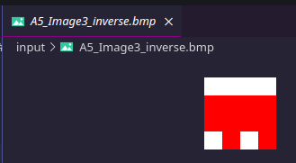image ./images/A5_Image3_inverse.png
3.Profitez de cette information pour obtenir facilement à partir de ImageExempleIndexBMP3_16.bmp.
a l’adresse 16 il y a A9 01 00 00 => 2**16-425 = FE57 57 FE FF FF
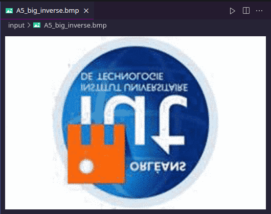image ./images/A5_big_inverse.png
A6
Un fichier BMP avec compression
Il existe un mode de compression facultatif dans les fichiers BMP. Le type de compression est RLE. Vous trouverez des explications sur RLE ici, et aussi une explication particulièrement intéressante mais incomplète appliquée à BMP ici.
1.Quel est le poids du fichier? Pourquoi? Que c’est-il passé?
A4_conv.bmp: 102 octets
A6.bmp: 1120 octets
bizzarement la version compresser est plus grosse ; dans le RLE on doit faire un compromit entre le nombre de bits que il faut entre encode le valeur et le nombre de fois que la valeur est répéter et just répéter comme dans l’original ; mais la ce n’est pas le problème , je suspecte que les créateurs très intelligent on mit une palette très grande car sinon le tableau de pixels ne fait que 42 bytes
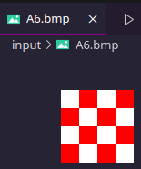image ./images/A6.png
2.Trouvez dans l’entête l’offset que donne l’adresse de début des pixels.
04 36
3.Décodez le code des pixels. (C’est-a-dire essayez de retrouver dans l’hexadécimal le codage des pixels et expliquez-le)
hum j’y suis pas arriver , je ne suis pas une machine et j’allais pas code RLE sans lib dans mon programme.
1.Quel est le poids du fichier A7.bmp? Pourquoi est-il moins grand que celui de l’image A4_Image3.bmp?
A4_Image3 : 78 octets A7.bmp: 1087 octets
logiquement oui ca devrai être plus petit mais encore la palette de 256 entrées vide. 24 bytes pour le tableau de pixels.
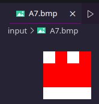image ./images/A7.png
2.Décodez le code des pixels. (C’est-a-dire essayez de retrouver dans l’hexadécimal le codage des pixels et expliquez-le).
j’y suis pas arriver.
A8
Modifiez le fichier Image5.bmp afin d’obtenir cette image que vous nommerez Image6.bmp . Attention vous devez modifier directement dans le code compressé.
-> prendre la version de base decompressé A4_Image3.bmp , la modifier et la compresser après.
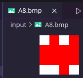image ./images/A8.png
A9
Modifiez le fichier Image6.bmp afin d’obtenir cette image que vous nommerez Image7.bmp . Attention vous devez modifier directement dans le code compressé.
-> prendre la version de base decompressé A4_Image3.bmp , la modifier et la compresser après.
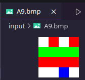image ./images/A9.png
A10
Modifiez le fichier Image7.bmp afin d’obtenir cette image que vous nommerez Image8.bmp . Attention vous devez modifier directement dans le code compressé.
-> prendre la version de base decompressé A4_Image3.bmp , la modifier et la compresser après.
l’interface graphique est trop lente pour afficher cette qualiter donc j’ai fait un autre fichier
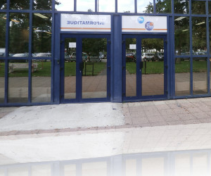image ./input/B2.bmp
B3
j’ai utiliser PILLOW
image ./input/B3.bmp
B4
image ./input/B4.bmp
B5
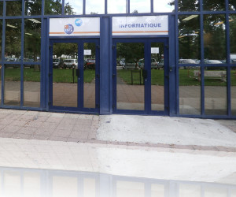
B7
1.Chiffre à clé unique : Le chiffre de Vernam est un exemple de chiffrement à clé symétrique, où la même clé est utilisée pour chiffrer et déchiffrer le message. La clé doit être aussi longue que le message à chiffrer.
2.Addition modulo 2 (XOR) : Le chiffrement de Vernam utilise l’opération d’addition modulo 2 (XOR) entre chaque bit du message et le bit correspondant de la clé. L’addition modulo 2 renvoie 1 si les bits sont différents et 0 s’ils sont identiques.
3.Longueur de clé égale à la longueur du message : Pour assurer une sécurité maximale, la clé doit être générée de manière aléatoire et être de la même longueur que le message. Cela signifie qu’il n’y a pas de répétition de la clé, et chaque bit de la clé est utilisé une seule fois pour chiffrer un bit correspondant du message.
B9
L’intérêt de Solitaire réside dans le fait qu’il ne nécessite pas l’utilisation d’une clé secrète stockée électroniquement. Au lieu de cela, il utilise une clé initiale secrète, souvent appelée “clé de départ”, et génère une séquence de nombres pseudo-aléatoires à partir de cette clé à l’aide d’un jeu de cartes.